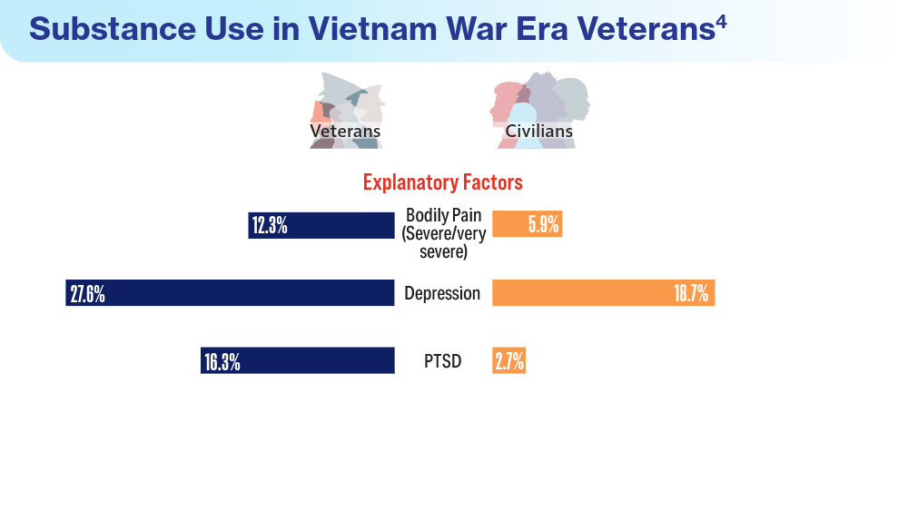

Conducted Studies/Research
A Little History of Combat Veterans and Mental Health

Government accountability access reports found that of the 91,764 service members who received a misconduct separation from the service between 2011-2015, 62 percent (57,141) were diagnosed with PTSD or a traumatic brain injury within 2 years of their separation. Of the 62 percent, 23 percent (12,283) received an (OTH)other than honorable discharge. These veterans did not receive mental health care from VHA.
In 2017, VA Secretary David Shulkin announced that Veteran's Affairs would offer emergency mental health care to veterans with an other than honorable discharge status as part of its ongoing efforts to prevent veteran suicides. With this initiative, veterans with other than honorable discharge were able to seek treatment at a VA emergency department, Vet Center, and contact the Veterans Crisis Line. With the expanding eligibility for service members, some veterans were not sure if they qualified for certain health care services. It was reported that many veterans reported a lack of knowledge about veterans’ affairs even after completing the TAP program. The (TAP) program serves as a transitional assistance program for service members before they go from active duty to veteran status. Only 6.1 million of the total 20.3 million of the veteran population have used VA healthcare services.
Opioids for Chronic Pain in Veterans
In a meta-analysis conducted among patients who had been prescribed opioids for chronic pain; ten predictors were used to understand the correlation to opioid overdoses. It was found that the mental health indicators for this study used bipolar disorder, depression, and other mental health disorders proved to be moderate indicators of opioid fatalities. However, another indicator was history of prescription of fentanyl and other opioids. This indicator had a high risk of association, that resulted in fatalities from opioids.
Opioids and Mental Health
In a cohort study that consisted of only veterans who had prior history of a non-fatal overdose and veterans who had no history of opioid overdose, there were 8,370 Veterans with a history of nonfatal opioid overdose and a total follow-up of 39,207 person-years. The veterans that had history of prior opioid non-fatal overdose, approximately 17.4 % of them experienced death in the follow-up of the study. In this study the most common causes of death amongst veterans were identified. Veterans who had history of non-fatal opioid overdose were two times more likely to die from suicide in comparison to the veteran group with no history of opioid overdose. About 30% of veterans who use VA services had a prevalence of overdose from opioids between 2001-2009. The rise quickly went up to 65% of the veteran population from 2010-2016